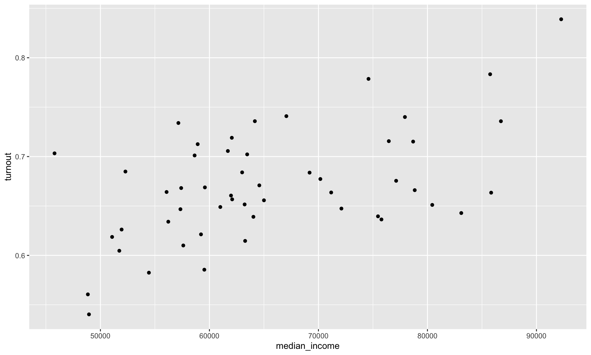
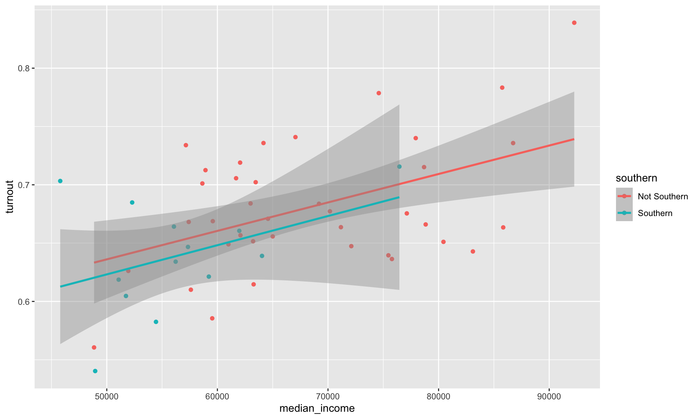

install.packages(c("tidyverse", "MetBrewer"))
library(tidyverse)
library(MetBrewer)Introducing R Through Data Visualization
Introduction
Data visualization is one of the most powerful tools in a political scientist’s analytical toolkit. Well-designed visualizations make complex data easier to understand and help communicate findings effectively. In this chapter, we introduce ggplot2, a popular R package that follows the grammar of graphics, a structured approach to building plots. Instead of relying on pre-made chart templates, ggplot2 allows you to layer different elements to create customized and insightful visualizations.
By the end of this chapter, you will be able to create meaningful plots using real-world political science data. We will walk through the process of building a visualization step by step, using voter turnout data from the 2020 U.S. presidential election.
Let’s get started!
Set up
Before we begin, ensure you have installed and loaded the necessary R packages:
Tip
You only need to install an R package onto your computer once, but you need to load it (using library("package_name")) every time you start a new R session.
The tidyverse package includes ggplot2, as well as other useful tools for working with data.
Does Wealth Influence Voter Turnout?
In the 2020 U.S. presidential election, voter turnout varied significantly across states. Some states saw record participation, while others lagged behind. What factors explain this variation? One common hypothesis is that wealthier citizens are more likely to vote.
We will investigate this by exploring the relationship between median household income and voter turnout rates across U.S. states.
Data
To analyze this question, we use the turnout_df dataset, which contains information on voter turnout, median income, and regional classifications of U.S. states. To load it into your current R session, run the following:
turnout_df <- read_csv("https://gist.githubusercontent.com/hgoers/ecbe1f9659cefd38be799392e6f66a0f/raw/9666e887f0befd1f854388b29ef2cd1add6b03fe/turnout.csv")This data set provides us with information on all 51 US states and DC. Each row contains an observation, which is a set of information about each of our states. We have information about 8 variables, including the state’s name and its total population of citizens (in thousands).
Let’s take a quick look at the data:
glimpse(turnout_df)Rows: 51
Columns: 8
$ state <chr> "Alabama", "Alaska", "Arizona", "Arkansas", "Californ…
$ state_abb <chr> "AL", "AK", "AZ", "AR", "CA", "CO", "CT", "DE", "DC",…
$ total_citizens <dbl> 3716, 516, 5075, 2195, 25946, 4200, 2524, 722, 534, 1…
$ total_registered <dbl> 2527, 383, 3878, 1361, 18001, 2993, 1850, 542, 464, 1…
$ total_voted <dbl> 2247, 330, 3649, 1186, 16893, 2837, 1681, 489, 448, 9…
$ turnout <dbl> 0.6046825, 0.6395349, 0.7190148, 0.5403189, 0.6510830…
$ southern <chr> "Southern", "Not Southern", "Not Southern", "Southern…
$ median_income <dbl> 51734, 75463, 62055, 48952, 80440, 77127, 78833, 7017…Key variables include:
-
turnout: The proportion of adult citizens in a state that voted in the 2020 election. -
median_income: Median household income in the state. -
southern: A binary variable indicating whether the state is Southern or not.
Ultimate goal
By the end of this session, you will have created the following plot:
Along the way, you will learn more about R packages and functions, data types, vectors, and lists.
Creating a ggplot
We start by creating an empty plot using the function ggplot():
ggplot()This is the blank canvas upon which you will append layers. The first argument ggplot() takes is the data you want it to plot. We want to provide it with the turnout_df data set.
ggplot(data = turnout_df)
Nothing has happened visually to our plot, but we can now reference these data as we add layers to the plot.
The next argument ggplot() takes is mapping, which takes information on how our data should be represented on the plot. This argument takes a function, aes(). This function (which is short for aesthetics) specifies which variables will be mapped to which elements of the plot. Our scatter plot has two dimensions: x and y. Let’s tell ggplot() which variables we want in each of those dimensions:
ggplot() has added structure to the blank canvas. It has plotted out the range of observed values of each state’s median income on the x-axis and its voter turnout on the y-axis.
Next, we need to add the states. To do this, we add geometric objects (geoms) to our plot. We want a scatter plot, so we will use geom_point(). Throughout this course you will see many of the different geoms_* available.
ggplot(data = turnout_df, mapping = aes(x = median_income, y = turnout)) +
geom_point()
This is looking good! We can see each state’s median income and voter turnout in 2020. Importantly, we can see this information within the context of all other states’ median incomes and voter turnout rates. We can, therefore, start to answer our question: do states with wealthier citizens have higher turnout rates than states with poorer citizens?
This appears to be the case. The states with lower median incomes (sitting to the left of the plot) appear to have low turnout rates (sitting in the lower half of the plot) when compared to states with higher median incomes. Formally, we would say that these variables appear to be positively related to one another. Higher (lower) values of one variable tend to be associated with higher (lower) values of the other.
Adding aesthetics and layers
We can add more dimensions to our plot to communicate different groups in our data. For example, we may want to explore whether the relationship between wealth and turnout rates differs for Southern states and non-Southern states. To see this, I am going to colour in the points on the scatter plot based on whether they are Southern states.
ggplot(data = turnout_df, mapping = aes(x = median_income, y = turnout, colour = southern)) +
geom_point()The southern variable is categorical. ggplot() automatically assigns each unique category within this variable a value (here, a colour). It also adds a useful legend to the plot informing you of these values.
We can now add a new layer to our scatter plot that sums up the relationship between our two variables of interest more succinctly. We can plot the line of best fit (more on this later in the course), determined by a linear model, using geom_smooth() with its method argument set to "lm" (for linear model).
ggplot(data = turnout_df, mapping = aes(x = median_income, y = turnout, colour = southern)) +
geom_point() +
geom_smooth(method = "lm")
We have added two lines of best fit to our data: one fit against the Southern states and another fit using only the non-Southern states. From this we learn that despite Southern states tending to have both less wealthy citizens and lower turnout rates than their non-Southern counterparts, the relationship between wealth and turnout rates appears the same across these two groups. These lines have very similar slopes and are almost set at the same height. We can appropriately consolidate these two groups into one when discussing the relationship between wealth and turnout rates.
Note
We will discuss how we prove formally that these two relationships are not substantively or statistically significantly different from one another during the course.
How do we do this in ggplot? The aesthetics we define in the ggplot() function are global. This means that they are passed down to every subsequent geom layer of the plot. Happily, each of these layers can take their own mapping arguments. These will override the mapping argument provided to ggplot(), if one exists.
ggplot(data = turnout_df, mapping = aes(x = median_income, y = turnout)) +
geom_point(aes(colour = southern)) +
geom_smooth(method = "lm")Because we asked only the geom_point() layer to consider whether a state is Southern or not, we now have one line of best fit representing the relationship between our variables of interest across all 50 states and DC.
Cleaning up our plot
We are missing some important information on our plot. First, we need to provide a useful title for our viewers. We should also provide a brief summary of the relationship in our own words. It is also always good to include your data source (I got these data from the US Census). Finally, you should always use informative and tidy axis labels so your viewer is not confused as to what each variable measures. Let’s add all those labels to our plot using the labs() function:
ggplot(data = turnout_df, mapping = aes(x = median_income, y = turnout)) +
geom_point(aes(colour = southern)) +
geom_smooth(method = "lm") +
labs(title = "Median income and voter turnout in the 2020 US Presidential election by state",
subtitle = "States with wealthier citizens tended to have higher turnout rates than states with poorer citizens",
x = "Median income",
y = "Voter turnout",
colour = "Region",
caption = "Source: US Census")That’s better, but our plot is still very cluttered. Let’s remove some of those extraneous frills. We can do this using the theme_*() set of functions. These provide you with some aesthetic settings that the authors of ggplot thought might be useful. For example, here are three different theme_*() functions from which you can select:
I like theme_classic(), so let’s apply that to our plot:
ggplot(data = turnout_df, mapping = aes(x = median_income, y = turnout)) +
geom_point(aes(colour = southern)) +
geom_smooth(method = "lm") +
labs(title = "Median income and voter turnout in the 2020 US Presidential election by state",
subtitle = "States with wealthier citizens tended to have higher turnout rates than states with poorer citizens",
x = "Median income",
y = "Voter turnout",
colour = "Region",
caption = "Source: US Census") +
theme_classic()You can adjust these pre-set aethetic choices using the theme() function. For example, I want to do the following to our chart:
- Remove the padding between the title/subtitle and the edge of the plot
- Make the title bold
- Move the legend to under the subtitle
ggplot(data = turnout_df, mapping = aes(x = median_income, y = turnout)) +
geom_point(aes(colour = southern)) +
geom_smooth(method = "lm") +
labs(title = "Median income and voter turnout in the 2020 US Presidential election by state",
subtitle = "States with wealthier citizens tended to have higher turnout rates than states with poorer citizens",
x = "Median income",
y = "Voter turnout",
colour = "Region",
caption = "Source: US Census") +
theme_classic() +
theme(plot.title.position = "plot",
plot.title = element_text(face = "bold"),
legend.position = "top")Because I included theme() after theme_classic() in my script, I overwrote its default arguments for plot.title.position, plot.title, and legend.position.
Next, I want to include more informative tick marks. It would be good to include the unit for each, so the viewers are not left wondering. To do this we can use functions from the helpful scales R package in ggplot’s scale_*_continous() functions.
ggplot(data = turnout_df, mapping = aes(x = median_income, y = turnout)) +
geom_point(aes(colour = southern)) +
geom_smooth(method = "lm") +
labs(title = "Median income and voter turnout in the 2020 US Presidential election by state",
subtitle = "States with wealthier citizens tended to have higher turnout rates than states with poorer citizens",
x = "Median income",
y = "Voter turnout",
colour = "Region",
caption = "Source: US Census") +
theme_classic() +
theme(plot.title.position = "plot",
plot.title = element_text(face = "bold"),
legend.position = "top") +
scale_x_continuous(labels = scales::dollar) +
scale_y_continuous(labels = scales::percent)I used scales::percent() to convert the proportions plotted on the y-axis to percentages and scales::dollar() to convert the median income values into more readable dollar values.
Tip
You can use a function from an R package without loading the whole package into your session by including the package name and two colons before the function. This is useful when you only want to use one or two functions from a package infrequently in your script. For example, I only need these two functions from the scales package once, so I prefer to call them directly than load in the whole package.
Next, I would like to increase the size of the points so they are easier to see. I can do this by adjusting geom_points() size argument:
ggplot(data = turnout_df, mapping = aes(x = median_income, y = turnout)) +
geom_point(aes(colour = southern), size = 2) +
geom_smooth(method = "lm") +
labs(title = "Median income and voter turnout in the 2020 US Presidential election by state",
subtitle = "States with wealthier citizens tended to have higher turnout rates than states with poorer citizens",
x = "Median income",
y = "Voter turnout",
colour = "Region",
caption = "Source: US Census") +
theme_classic() +
theme(plot.title.position = "plot",
plot.title = element_text(face = "bold"),
legend.position = "top") +
scale_x_continuous(labels = scales::dollar) +
scale_y_continuous(labels = scales::percent)We’re almost there. As a final touch, I would like to use a more appealing colour palette than the default one. First, I will make the line of best fit grey so it doesn’t dominate the plot. I can do this using geom_smooth()’s colour argument:
ggplot(data = turnout_df, mapping = aes(x = median_income, y = turnout)) +
geom_point(aes(colour = southern), size = 2) +
geom_smooth(method = "lm", colour = "darkgrey") +
labs(title = "Median income and voter turnout in the 2020 US Presidential election by state",
subtitle = "States with wealthier citizens tended to have higher turnout rates than states with poorer citizens",
x = "Median income",
y = "Voter turnout",
colour = "Region",
caption = "Source: US Census") +
theme_classic() +
theme(plot.title.position = "plot",
plot.title = element_text(face = "bold"),
legend.position = "top") +
scale_x_continuous(labels = scales::dollar) +
scale_y_continuous(labels = scales::percent)Next, I would like to change the colours of the points. I really like the palettes included in the MetBrewer R package. This package creates palettes based on paintings hanging in the Metropolitan Museum of Art.
Note
You can see all the colour palettes included in the package here: https://github.com/BlakeRMills/MetBrewer.
For example, this palette comes from Vincent van Gogh’s Cypresses (1889):
met.brewer(name = "VanGogh1")And this colourblind-friendly palette comes from Carl Morgenstern’s Jungfrau, Mönch, and Eiger (1851):
met.brewer(name = "Morgenstern")Let’s use the beautiful colour palette generated from William Henry Johnson’s Jitterbugs V (1941–42). This palette has highly contrasting colours, which will make it easy for our viewer to distinguish between Southern and non-Southern dots.
met.brewer(name = "Johnson")To manually select our colour palette, we need to use the scale_colour_manual() function:
ggplot(data = turnout_df, mapping = aes(x = median_income, y = turnout)) +
geom_point(aes(colour = southern), size = 2) +
geom_smooth(method = "lm", colour = "darkgrey") +
labs(title = "Median income and voter turnout in the 2020 US Presidential election by state",
subtitle = "States with wealthier citizens tended to have higher turnout rates than states with poorer citizens",
x = "Median income",
y = "Voter turnout",
colour = "Region",
caption = "Source: US Census") +
theme_classic() +
theme(plot.title.position = "plot",
plot.title = element_text(face = "bold"),
legend.position = "top") +
scale_x_continuous(labels = scales::dollar) +
scale_y_continuous(labels = scales::percent) +
scale_colour_manual(values = met.brewer(name = "Johnson")[c(1, 5)])
Huh, what’s with those numbers and brackets? The values argument of scale_colour_manual() takes a vector of hex values representing your selected colours. A hex value is a unique value assigned to a colour. You will see the ones provided in the Johnson palette shortly.
A vector is a collection of values of the same type. For example, here is the vector representing our colour palette:
[1] "#a00e00" "#d04e00" "#f6c200" "#0086a8" "#132b69"These are all characters (think: words, or letters). Other data types include integers, logical values, and factors. You will be introduced to these throughout the course.
I want to use the two colours at opposing ends of this palette so they are easy to distinguish from each other. I, therefore, need to grab the first value, #a00e00, and the fifth value, #132b69. I can do this using those square brackets and providing the value’s position. For example, here is the code to grab the second value:
met.brewer(name = "Johnson")[2][1] "#d04e00"And third value:
met.brewer(name = "Johnson")[3][1] "#f6c200"To grab two values, you need to provide their positions within a vector, which is created using the code c(). For example, I include the two values in my vector using the following:
c(2, 3)[1] 2 3Which I can then include in the brackets to get their corresponding colour values:
met.brewer(name = "Johnson")[c(2, 3)][1] "#d04e00" "#f6c200"Putting this all together, I can supply scale_colour_manual() with the values I would like to use from the Johnson palette. Pretty cool!
Answering the question
We now have a clean and engaging visualization of the relationship between a state’s median income and its voter turnout rates. It shows that this relationship is positive: states with higher median incomes tended to have higher turnout rates than states with lower median incomes.

Can we learn anything more from this relationship? For example, do you think that we can definitively say that states that increase their median incomes will see higher turnout rates at the next Presidential election? Or do you think something else might be going on? Perhaps individuals with higher levels of education tend to earn and vote more than those with less education. Might that be the decisive factor lurking behind this relationship? This course will provide you with the skills to use data to wade through these murky and complex relationships. Your first step should always be to visualize your data!
Summary
ggplot2allows you to build custom visualizations by layering different components.We explored voter turnout and income, finding an apparent positive relationship.
Adding colors, labels, and trend lines enhances clarity and insight.
Future sessions will explore more advanced visualizations and data transformations.